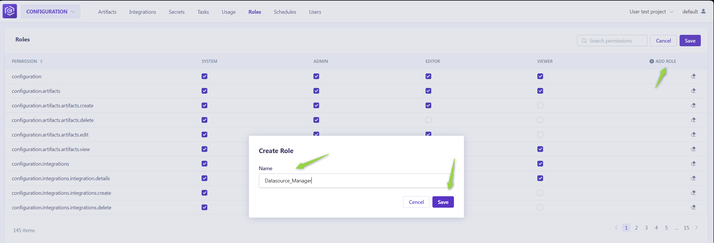

Managing Users and Roles
How to access Admin menu:
To configure or modify the admin settings for a specific project:
- Navigate to https://alita.lab.epam.com/-/configuration/users/.
- Select the project from the dropdown list for which you want to set up or adjust the admin settings.

Users Menu
In the Users menu, administrators can manage project participants efficiently. Here's how to navigate this section:
Adding New Users:
Only users with an admin role can invite new members. To do so:
- Enter the prospective member's email address in the Email Address input field.
- Select their role from the Role dropdown menu.
- Click the Invite button.
- An invitation will be sent, and upon their first login, their details will be added to the Users table, activating their account.

Notes
- Multiple users can be invited simultaneously by separating email addresses with a comma.
- For Epam projects, use the invitee's Epam email. For customer projects, the customer's Active Directory is utilized for invitations.
Managing Users:
The Users table displays all members, their roles, and their last login information. Admins can modify a user's role or revoke access by clicking the respective Edit or Delete icons next to a user's name.

Roles Menu
The Roles menu allows for the detailed configuration of permissions across default and custom roles, tailoring access to the project's needs.
Default Roles:
- System: Grants comprehensive permissions, including additional administrative capabilities.
- Admin: Allows full project access and user management.
- Editor: Provides editing rights within the project without administrative privileges.
- Viewer: Limits access to viewing permissions, excluding any create, read, update, delete (CRUD) actions.

Customizing Roles:
To adjust permissions for any role:
- Click the Edit roles icon.
- Toggle the checkboxes for each permission as needed.
- Click the Save to apply changes.

Creating a New Role:
- Click Edit roles.
- Then Add role. After naming the new role, select the desired permissions.
- This custom role will now be available for assignment in the Users menu.

By understanding and utilizing the Users and Roles menus, administrators can ensure that project participants have the appropriate access levels, fostering a secure and efficient collaborative environment.